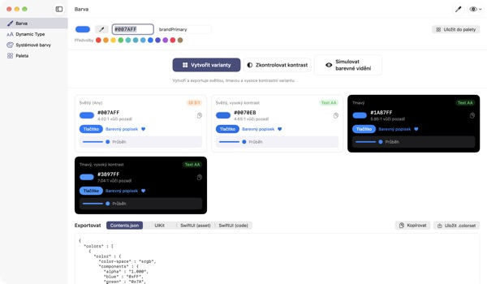
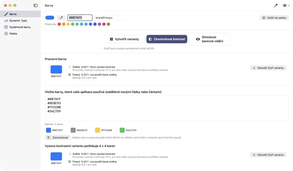
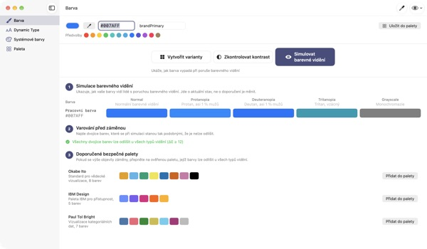
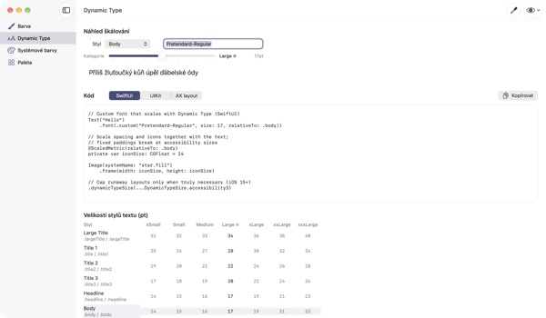

Jedna barva na vstupu,
čtyři vzhledy na výstupu
Systémové barvy se samy přizpůsobí tmavému režimu i Zvýšení kontrastu. Vaše firemní barvy ne. TetraTint vezme jednu barvu světlého režimu, vytvoří varianty Světlý, Světlý s vysokým kontrastem, Tmavý a Tmavý s vysokým kontrastem a rovnou je vyexportuje do Xcode.
Všechny funkce jsou zdarma. Vyžaduje macOS 14 nebo novější.

Vyzkoušejte svou firemní barvu
Vložte hodnotu hex nebo klepněte na předvolbu. Stejný výpočet jako v aplikaci hned ukáže všechny čtyři varianty a jejich kontrast.
Ztratila se vám firemní barva v tmavém režimu?
Modrá vybraná ve světlém režimu působí na černé zašedle a lidé se zapnutým Zvýšením kontrastu text sotva přečtou. Hledat barvu pro každý vzhled a ručně přepočítávat kontrast zabere půl dne. TetraTint odvodí varianty tak, jak se mezi vzhledy mění systémové barvy, a hned ukáže, jestli každá obstojí.
Zkontrolujte všechny používané barvy najednou
Vložte celý seznam hex z aplikace a každá barva dostane verdikt: lze použít beze změny, chce vysoký kontrast, nebo jen dekorativní.
Problémovou barvu jedním kliknutím převedete na čtyři varianty uložené v paletě. Hodí se i při přípravě označení přístupnosti Dostatečný kontrast v App Storu.

Dívejte se očima barvoslepých
Uvidíte paletu při protanopii, deuteranopii, tritanopii a v odstínech šedi a dostanete upozornění na dvojice, které splývají.
Palety bezpečné pro barvoslepé Okabe–Ito, IBM a Paul Tol načtete jedním kliknutím a tlačítkem s okem vpravo nahoře si takto zobrazíte celou aplikaci.

Vlastní písma se řídí velikostí textu
Prohlédněte si 11 textových stylů v 7 velikostech a posuvníkem si zobrazte skutečné velikosti.
Zadejte PostScriptový název písma a získáte kód pro UIKit, SwiftUI a @ScaledMetric i kód, který při velkém písmu přepne rozvržení.

Tři kroky na začátek
- 1
Zadejte základní barvu
Vložte hex, naberte barvu kapátkem kdekoli na obrazovce nebo zvolte předvolbu.
- 2
Zkontrolujte čtyři varianty
Podívejte se na štítky kontrastu a varianty mimo styl značky dolaďte výběrem barvy.
- 3
Exportujte do Xcode
Zkopírujte nebo uložte jako Contents.json, .colorset nebo kód UIKit a SwiftUI.
Jak vznikají varianty a co znamenají štítky
- Světlý (Any)
- Vaše barva tak, jak jste ji zadali
- Světlý, vysoký kontrast
- O něco sytější a ztmavená, dokud nedosáhne 4.5:1 na bílé
- Tmavý
- O něco světlejší a živější (světlost +5, sytost +3)
- Tmavý, vysoký kontrast
- Zesvětlená, dokud nedosáhne 7:1 na černé
- Text AA
- Kontrast s pozadím aspoň 4.5:1, vhodné pro text
- UI 3:1
- Aspoň 3:1, stačí na tlačítka a ikony, na text ne
- Nízký
- Pod 3:1, nepoužívejte pro text, ikony ani stavy
- Export
- Contents.json · .colorset · UIKit · SwiftUI, nebo celá paleta jako jeden .xcassets
Referenční hodnoty systémových barev vycházejí z Apple Human Interface Guidelines a mohou se s aktualizacemi systému měnit. Ve vydané aplikaci používejte API systémových barev.
Časté dotazy
Je to opravdu zdarma?
Ano. Všechny funkce jsou zdarma, bez účtu a bez reklam. Pokud vám pomohla, můžete v Nastavení nechat spropitné; nic tím neodemknete.
Vytvořené varianty neladí s naší značkou.
Každou variantu upravíte výběrem barvy na její kartě. Vytvořit vše znovu zahodí ruční úpravy a vše znovu odvodí ze základní barvy.
Jak se varianty počítají?
Podle toho, jak se systémové barvy Applu skutečně mění mezi vzhledy: v tmavém o něco světlejší a živější, ve světlém s vysokým kontrastem aspoň 4.5:1 na bílé, v tmavém s vysokým kontrastem aspoň 7:1 na černé.
Co znamená upozornění v simulaci barevného vidění?
Že při této simulaci klesne rozdíl dvou barev (ΔE) pod 12 a těžko se rozliší. Nespoléhejte jen na barvu: přidejte ikony, vzory nebo popisky, nebo přejděte na bezpečnou paletu.
Jak naučit vlastní písmo Dynamic Type?
V části Dynamic Type zadejte PostScriptový název písma a zvolte styl, a dostanete kód pro UIKit, SwiftUI a @ScaledMetric. Ve velikostech pro zpřístupnění naroste Body na víc než trojnásobek, takže se vyhněte pevné výšce a lineLimit(1).
Exportované barvy vypadají jinak než systémové v mé aplikaci.
Referenční hodnoty vycházejí z Human Interface Guidelines a mohou se mezi verzemi systému měnit. Pro systémové barvy vždy používejte API UIColor nebo Color.
Kde je uložená moje paleta?
Jen na vašem Macu. Nic se nesynchronizuje do cloudu ani nikam neodesílá. Podrobnosti najdete v zásadách ochrany soukromí.
Ukládá se barva nabraná kapátkem?
Ne. Přečte se jen hodnota barvy ve zvoleném bodě a použije se jako pracovní barva. Žádný obraz obrazovky se neukládá ani neodesílá.
Na kterých Macích funguje?
Na macOS 14 (Sonoma) a novějších. Při exportu si sami zvolíte, kam se soubory uloží.
Chyby, nápady nebo dotazy pište na leeo@kakao.com. Obvykle odpovídáme do 2–3 dnů.